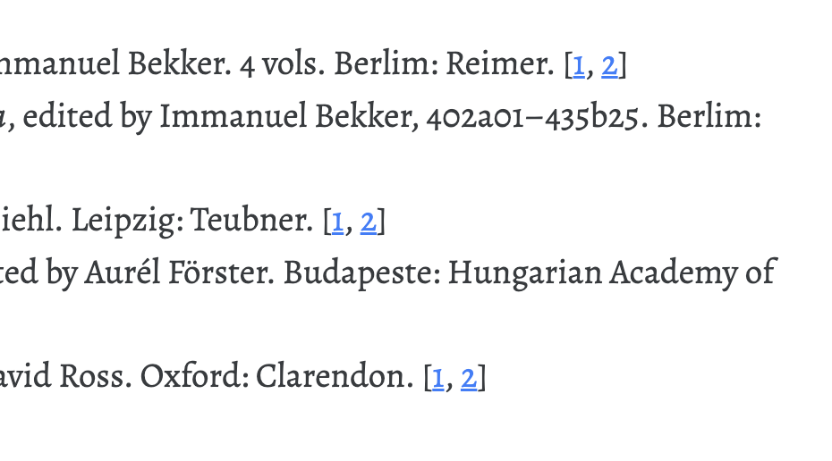

📚 Cite Tools for Pandoc and Quarto
This extension introduces advanced bibliography features to Pandoc and Quarto’s Citeproc environment. It bundles several Lua filters (vide infra) to address complex bibliography demands while keeping the output consistent across all formats (LaTeX, DOCX, HTML, and so on).
Features
More specifically, this bunddle seeks to address in the simplest of ways possible the following demands:
1. Multiple bibliographies
The need for multiple bibliographies (or bibliographies with multiple sections, such as primary sources and secondary sources).
2. Cite fields
The need to evoke arbitrary information from the references, such as author, editor, or translator names and title / original-title of works.
@AristOp in csljson
{
"author": [
{
"family": "Aristotle"
}
],
"editor": [
{
"family": "Bekker",
"given": "Immanuel"
}
],
"id": "AristOp",
"issued": {
"date-parts": [
[
1831
]
]
},
"number-of-volumes": "4",
"publisher": "Reimer",
"publisher-place": "Berlim",
"title": "Aristotelis opera",
"type": "book"
}3. Citation backlinks
The need to turn the bibliography into a linked index of cited references, with links from the entries back to each of its multiple occurences in the body of the text (e.g. in PDF/DOCX: [p. 1, p. 4, p. 10], in HTML: [1, 2, 3]) (and with the ability to turn these off globally or in an ad hoc fashion).

- Optionally, the need to split the bibliography into sections, printing the bibliography for each chapter/section/part. (For this, you must uncomment the apropriate line in the
_extension.yamlfile.)
Install
Users of Quarto can install this extension with the following command
quarto install extension bcdavasconcelos/citetoolsand use it by adding citetools to the filters entry in their YAML header.
---
filters:
- citetools
---Configuration
Multiple bibliographies
Add bibliography files to the refs folder. Then, add the following metadata to the YAML header of your document in this way:
---
bibliography_primary: refs/primary.json
bibliography_secondary: refs/secondary.json
---Then, place the bibliographies placeholders in the document where you want the bibliographies to appear.
# Primary Sources
::: {#refs_primary}
:::
# Secondary Sources
::: {#refs_secondary}
:::These divs are filled with citations from the respective bib-file. Each refs-x div should have a matching entry x in the metadata.
Make sure the bibliography name and the placeholder div id match.
That is, if you have a bibliography named bibliography_primary, the placeholder div should be refs-primary or refs_primary.
Cite fields and citation backlinks global options
link-fields(boolean): Link inlines printed bycitefieldto their corresponding entry in the bibliography. Default:true.link-citations(boolean): Link citations to their respective reference in the bibliography. Default:true. Note: iflink-citationsis set tofalse,link-fieldsis also set tofalse.
See sample document sample.qmd for a working example with explanations.